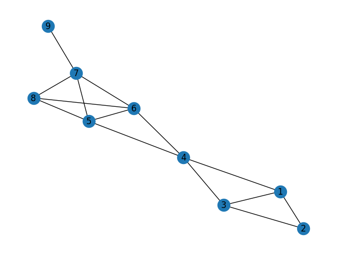

GRAPH
%%capture
pip install networkx
import networkx as nx
G=nx.Graph()
#creating and connecting the nodes
G.add_edges_from([(1,2),(1,3),(1,4),(2,3),(3,4),(4,5),(4,6),(5,6),(5,7),(5,8),(6,7),(6,8),(7,8),(7,9)])
#drawing graph
nx.draw(G,with_labels=True)

1. Degree Centrality
Degree centrality : banyaknya node yang mendapat informasi
Rumus :
#calculate degree centrality
dc = nx.degree_centrality(G)
dc
{1: 0.375,
2: 0.25,
3: 0.375,
4: 0.5,
5: 0.5,
6: 0.5,
7: 0.5,
8: 0.375,
9: 0.125}
#get ranking
sorted(dc, key=dc.get, reverse=True)
[4, 5, 6, 7, 1, 3, 8, 2, 9]
2. Closenes Centrality
Closenes centrality : cepatnya node menyampaikan informasi dengan menghitung jarak lintasannya
Rumus :